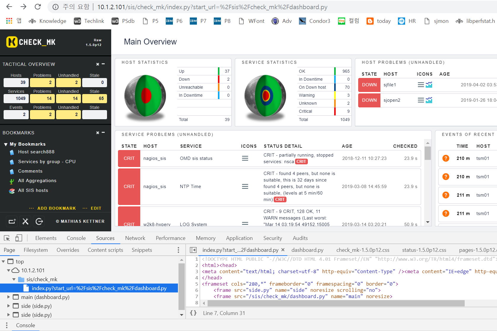
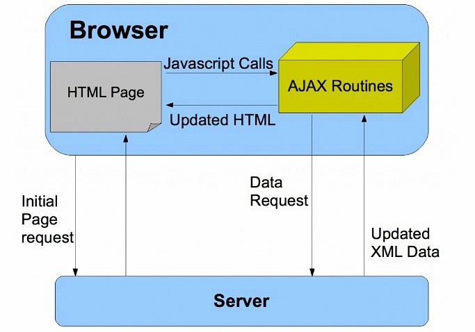
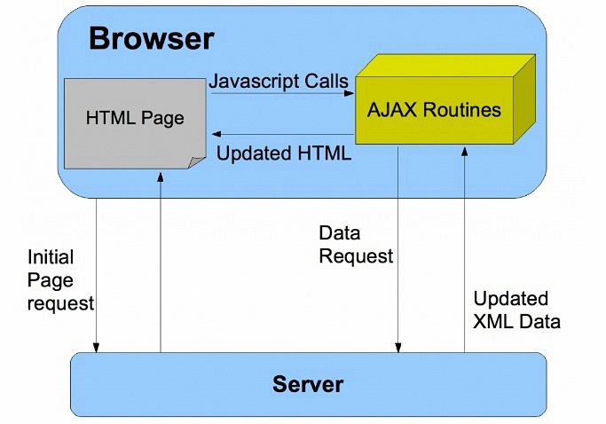

Check_MK 분석 1
- Check_MK 파이썬 홈페이지 구조 분석
Check_MK 화면은 mod_python, html, CSS, JavaScript, jquery, Ajax, cookie 등 다양한 기술이 사용되었다.
Python 은 서버 Site 에 사용되었고 HTML + CSS + JS 사용해서 브라우저에 동적인 Page 를 구현
서버 IP: 172.16.30.93 root/ibmkts1
RootDocument 위치: /omd/sites/sjopen/share/check_mk/web/htdocs
참고:
- /omd/sites/sjopen/share/check_mk/web/htdocs/index.py 파일이 index 이면서 .py 로 끝나는 모든 파일에 대한 핸들러임
- 서버싸이드 프로그램은 mod_python 이며 .py 로 끝나는 모든 요청을 index.py 핸들러 하나로 처리함.(test.py 요청해도 index.py 호출)
- 메인 페이지는 dashboard.py 와 side.py (2개의 프레임) 인데, dashboard.py 파일을
요청하면 dashboard.py 파일이 호출되는게 아니고 index.py?deshboard.py 형태로 처리됨
- index.py 는 HTML query 를 옵션으로 받아서 python 으로 HTML 문서 생성
- mod_python 메뉴얼: http://modpython.org/live/mod_python-3.3.1/doc-html/tut-what-it-do.html
n. CSS 사용예.
<link rel="stylesheet" type="text/css" href="mystyle.css">
n. javascript 사용예.
<script src="script.js"></script>
n. Check_MK 가 사용하는 Apache config file 확인
- httpd 프로세스 옵션에서 apache config 파일 위치를 확인
- error_log 에서 mod_python/3.3.1 버전 및 Python/2.7 확인
# ps -ef |grep http
sjopen
54273 30208 0 00:01 ? 00:00:11
/usr/sbin/httpd -f /omd/sites/sjopen/etc/apache/apache.conf
# cat /omd/sites/sjopen/var/log/apache/error_log
Apache/2.4.6 (CentOS) mod_python/3.3.1 Python/2.7.14 mod_fcgid/2.3.9 configured
n. apache.conf 설정 분석
# vi /omd/sites/sjopen/etc/apache/apache.conf
DocumentRoot
"/omd/sites/sjopen/var/www"
==> Public document root, 실제 파일은 하나도 없음
Include /omd/sites/sjopen/etc/apache/listen-port.conf ==> Listen 127.0.0.1:5000
(main apache
의 /etc/httpd/conf.d/zzz_omd.conf 및 mod_proxy 모듈에 의해서 80 /sjopen
은 http://127.0.0.1:5000/sjopen 으로 Proxy)
Include /omd/sites/sjopen/etc/apache/conf.d/*.conf ==> 추가적인 Configuration 파일들은 별도 파일에서 include
# ls /omd/sites/sjopen/etc/apache/conf.d/*.conf
/omd/sites/sjopen/etc/apache/conf.d/01_python.conf
==> LoadModule python_module mod_python.so 파이썬 모듈
apache 에 로드
/omd/sites/sjopen/etc/apache/conf.d/02_fcgid.conf
/omd/sites/sjopen/etc/apache/conf.d/auth.conf
==> AuthUserFile
/omd/sites/sjopen/etc/htpasswd
/omd/sites/sjopen/etc/apache/conf.d/check_mk.conf
==> Alias /sjopen/check_mk
/omd/sites/sjopen/share/check_mk/web/htdocs, 메인 Site 설정
/omd/sites/sjopen/etc/apache/conf.d/cookie_auth.conf
/omd/sites/sjopen/etc/apache/conf.d/dokuwiki.conf
/omd/sites/sjopen/etc/apache/conf.d/icinga.conf
/omd/sites/sjopen/etc/apache/conf.d/nagios.conf
/omd/sites/sjopen/etc/apache/conf.d/nagvis.conf
/omd/sites/sjopen/etc/apache/conf.d/omd.conf
/omd/sites/sjopen/etc/apache/conf.d/pnp4nagios.conf
/omd/sites/sjopen/etc/apache/conf.d/site.conf
/omd/sites/sjopen/etc/apache/conf.d/stats.conf
/omd/sites/sjopen/etc/apache/conf.d/var_www.conf
=> Alias /sjopen "/omd/sites/sjopen/var/www"
=> public document root 설정
N. /omd/sites/sjopen/etc/apache/conf.d/*.conf 파일 분석
n. mod_python 모듈을 Apache 에 추가
/omd/sites/sjopen/etc/apache/conf.d/01_python.conf
<IfModule !mod_python.c>
LoadModule python_module /omd/sites/sjopen/lib/apache/modules/mod_python.so
</IfModule>
# Mod_python is an Apache module that embeds the Python interpreter within the server.
n. mod_python 핸들러 설정(/sjopen/check_mk 경로에 대한 요청을 처리하는 방법)
/omd/sites/sjopen/etc/apache/conf.d/check_mk.conf
Alias /sjopen/check_mk /omd/sites/sjopen/share/check_mk/web/htdocs
<Directory /omd/sites/sjopen/share/check_mk/web/htdocs>
AddHandler mod_python .py
==> py로 끝나는 파일은 mod_python 으로 처리한다는 지시어
PythonHandler index
==> main request handler, index 모듈 임포트,
index.py 모듈에서 handler 함수를 호출
(PythonHandler -> handler), handler 호출 및 request object
전달
PythonOption mod_python.importer.path
"['/omd/sites/sjopen/local/share/check_mk/web/htdocs',
'/omd/sites/sjopen/share/check_mk/web/htdocs']"
==> 모듈을 검색하는 순서, apache.import_module() function is called with just
the name of the module.
DirectoryIndex index.py ==> 클라이언트가 디렉토리를 요청할때 찾아볼 자원
n. mod_python 핸들러
-
Apache는 일반적인 요청은 3단계 Phase로 나줘서 처리한다. (1) translate the requested URI
to a file location (2) read the file and send it to the client, then (3)
log the request.
- Apache가 처리하는 각각의 단계를 "핸들러(handler)"라고 한다.
- 특별한 처리가 필요한 요청은 additional handler 추가를 통해서 다르게 처리할 수 있다.
- AddHandler 설정은 .py 확장자로 끝나는 요청은 mod_python handler 로 처리해야 한다는 설정
- PythonHandler 설정은 핸들러 설정이며 Python??Handler 형태를 통해서 handler를 지정하고 원하는 동작을 할 수 있다.
- PythonHandler 는 중간에 아무것도 없어서 이름이 없는 핸들러이며 generic handler 라고 부른다.
- PythonHandler index 설정은 /sjopen/check_mk/*.py 확장자로 들어오는 요청은 generic handler 처리를 index.py로 처리한다는 의미다.
- *.py 로 들어오는 요청은 index.py 내부 handler() 함수가 generic handler로써 호출하고 request object 를 전달한다.(파일 존재 여부와 관계없다)
- request object (req) 는 http 요청에 대한 모든 정보를 가지고 있다.(client IP, header, URI, etc)


n. index.py 파일의 handler 함수 분석
(PythonHandler index 설정에 의해서 호출되는 파일)
/omd/sites/sjopen/share/check_mk/web/htdocs/index.py
#!/usr/bin/python
-*- encoding: utf-8; py-indent-offset: 4 -*-
# +------------------------------------------------------------------+
#
| ____ _
_ __ __ _
__ |
#
| / ___| |__ ___
___| | __ | \/ | |/ /
|
# |
| | | '_ \ / _ \/ __| |/ /
| |\/| | ' / |
#
| | |___| | | | __/ (__|
< | | | | . \
|
# |
\____|_|
|_|\___|\___|_|\_\___|_| |_|_|\_\
|
# |
|
# +------------------------------------------------------------------+
from mod_python import apache
import sys, os, pprint, __builtin__ ==> 파이썬 표준 라이브러리에 포함된 모듈, __builtin__ module provides direct access to all‘built-in’identifiers of Python
import traceback ==> 파이썬 표준 라이브러리에 포함된 모듈
# Check_MK 에서 설치한 파이썬 모듈 및 함수들 임포트 (/omd/sites/sjopen/share/check_mk/web/htdocs 아래)
import i18n
import sites
import livestatus
import modules
import userdb
import config
import login
from lib import *
import log
from html_mod_python import html_mod_python, FinalizeRequest
import cmk.paths ==> /opt/omd/versions/1.5.0p13.cre/lib/python/cmk/paths.py
# Main entry point for all HTTP-requests (called directly by mod_apache)
def handler(mod_python_req, fields = None, is_profiling = False): ==> .py 핸들러가 호출하는 함수 handler ("PythonHandler" 에서 Python 빼고 "handler"가 호출됨)
# Create an object that contains all data about the request and
# helper functions for creating valid HTML. Parse URI and
# store results in the request object for later usage.
__builtin__.html = html_mod_python(mod_python_req, fields) ==> html 인스턴스 생성 html_mod_python 클래스 (html 클래스 상속)
response_code = apache.OK
try:
config.initialize() ==> multisite.mk 및 multisite.d/*.mk 불러옴(include)
init_profiling(is_profiling)
html.init_modes() ==> Initializes the operation mode of the html() object.
# Make sure all plugins are avaiable as early as possible. At least
# we need the plugins (i.e. the permissions declared in these) at the
# time before the first login for generating auth.php.
modules.load_all_plugins()
# Get page handler.
handler = modules.get_handler(html.myfile, page_not_found) ==> myfile(.py빼고 filename만)을 pagehandlers 딕셔너리에서 검색, 없으면 page_not_found
==> pagehandlers 딕셔너리는 modules.py 모듈에 있고
modules.init_modules() 및
pagehandlers.update(pagetypes.page_handlers()) 에 의해서 pagetypes.py 의
page_handlers 가 목록을 만듬(??)
# Some pages do skip authentication. This is done by adding
# noauth: to the page hander, e.g. "noauth:run_cron" : ...
# TODO: Eliminate those "noauth:" pages. Eventually replace it by call using
# the now existing default automation user.
if handler == page_not_found:
==> 만약 page_not_found 발생하면 noauth 방식으로 재시도
handler = modules.get_handler("noauth:" + html.myfile, page_not_found)
if handler != page_not_found:
==> 만약 page_not_found 아니면 handler() 호출(반환된 page handler 이름으로, 왜 이름이 같을까??)
try:
handler() ==> URL 에서 호출한 핸들러 실행(EX: view)
except Exception, e:
html.write_text("%s" % e)
if config.debug:
html.write_text(traceback.format_exc())
raise FinalizeRequest()
<생략>
# All plugins might have to be reloaded due to a language change. Only trigger
# a second plugin loading when the user is really using a custom localized GUI.
# Otherwise the load_all_plugins() at the beginning of the request is sufficient.
if i18n.get_current_language() != previous_language:
modules.load_all_plugins()
ensure_general_access()
handler()
# Get page handler.
handler = modules.get_handler(html.myfile,
page_not_found) ==> return pagehandlers.get(name, dflt)
<생략>
# Early initialization upon first start of the application by the server
def initialize():
init_sys_path()
log.init_logging()
==> web.log 에 기록하도록 logger를
초기화(/opt/omd/sites/sjopen/var/log/web.log)
modules.init_modules() ==> modules.py 모듈에 정의된
init_modules 펑션 수행 : Loads all modules needed into memory and performs
global initializations
# Run the global application initialization code here. It is called
# only once during the startup of the application server.
initialize()
# Early initialization 절차 분석
index.py
-> initialize() -> modules.py -> init_modules ->
load_web_plugins('pages', globals()) -> lib.py ->
load_web_plugins(forwhat, globalvars): -> "/plugins/pages" 파일을
execfile() 하는것같음(따로분석하자)
n. Check_MK 메인 화면 분석
/sjopen/check_mk/ 접속하면 자동으로 index.py 옵션으로 start_url=dashboard.py 호출됨

n. CSS 파을은 어떻게 불러오나?
- 브라우저에서 확인한 CSS 경로는 다음과 같다.
- 실제 파일 이름은 check_mk.css 인데 check_mk-1.4.0p33.css 로 변경되서 불러온다.
- 아래 html_mod_python.py 모듈의 css_filename_for_browser 함수에서 파일명에 버전 정보를 넣어서 반환 하는것 같다.
- css_filename_for_browser 함수는 htmllib.py 와 html_mod_python.py 2곳에서 정의되었다.(메서드 오버라이드 인가??)
# vi /omd/sites/sjopen/share/check_mk/web/htdocs/html_mod_python.py
def css_filename_for_browser(self, css):
rel_path = "/share/check_mk/web/htdocs/" + css + ".css"
if os.path.exists(cmk.paths.omd_root + rel_path) or \
os.path.exists(cmk.paths.omd_root + "/local" + rel_path):
return '%s-%s.css' % (css, cmk.__version__)
n. 몇몇 모듈에 대한 분석
/omd/sites/sjopen/share/check_mk/web/htdocs/html_mod_python.py
=> Request 를 분석하고 URL 해석해서 page name 확인하는
기능? We strip away the .py and get the name of the page., 모바일, degug
=> def javascript_filename_for_browser(self, jsname):
/omd/sites/sjopen/share/check_mk/web/htdocs/htmllib.py
=> HTML encoding, def html_head(), def body_start() HTML 문서
만드는 Class, 함수들
/omd/sites/sjopen/share/check_mk/web/htdocs/views.py
[root@dev93 htdocs]# ls -l *html*
-rw-r--r--. 1 root root 102263 May 17 2018 htmllib.py
-rw-r--r--. 1 root root 12250 May 17 2018 html_mod_python.py
n. 참고문헌
What is Mod_python?
Apache module that embeds the Pyhton interpreter
mod_python 공식 온라인 메뉴얼
Mod python notes
Notepad++ 로 파이썬 개발 및 실행하기
Apache와 Python 연동하기(한글)
mod_python 핸들러 설명 > PythonHandler
파이썬 표준 라이브러리 - 어떤것이 있는지 찾아본다.
표준은 아니지만 쓸만한 파이썬 패키지 검색, Find, install and publish Python packages with the Python Package Index
설치는 pip, setuptools, wheel 사용
n. OMD public page 에서 mod_python 사용하도록 설정해서 테스트 -> OK
vi /omd/sites/sjopen/etc/apache/conf.d/var_www.conf
Alias /sjopen "/omd/sites/sjopen/var/www"
<Directory /omd/sites/sjopen/var/www>
Options +Indexes +FollowSymlinks
# sjjslee 2019.04.10 for test
AddHandler mod_python .py
PythonHandler index
DirectoryIndex index.py
# sjlslee
</Directory>
n. mod_python 테스트 프로그램 -> OK
# vi /omd/sites/sjopen/var/www/index.py
from mod_python import apache # 모든 mod_python 프로그램 필요, 함수명 만으로 모듈내부 함수를 사용하도록 모듈 임포트
def handler(req):
req.send_http_header()
req.write("Hello World!\n")
req.write("req.connection %s\n" % req.connection)
req.write("req.server %s\n" % req.server)
req.write("req.interpreter %s\n" % req.interpreter)
return apache.OK

https://wikidocs.net/29 => 파이썬 모듈 사용법
n. Ajax(Asynchronous JavaScript and XML) 구조
브라우저가 가지고있는 XMLHttpRequest 객체를 이용해서 전체 페이지를 새로 고치지 않고도 페이지의 일부만을 위한 데이터를 로드하는 기법
Ajax를 한마디로 정의하자면 JavaScript를 사용한 비동기 통신, 클라이언트와 서버간에 XML 데이터를 주고받는 기술
 
n. index.py 파일 handler 분석
(PythonHandler index 에 의해서 호출되는 파일)
# vi /omd/sites/sjopen/share/check_mk/web/htdocs/index.py
from mod_python import apache
def handler(req): ==> 핸들러가 호출하는 함수 선언 ("PythonHandler " 에서 Python 빼고 "handler"가 호출됨)
req.content_type = "text/plain"
req.write("Hello World!")
return apache.OK
n. /sjopen/ 으로 요청하면 /site/omd/ 로 리다이렉트
/omd/sites/sjopen/etc/apache/conf.d/omd.conf
RewriteRule ^/sjopen/?$ %{ENV:proto}://%{SERVER_NAME}/sjopen/omd/ [R=302]
Alias /sjopen/omd "/omd/sites/sjopen/share/omd/htdocs"
<Directory "/omd/sites/sjopen/share/omd/htdocs">
<IfModule mod_python.c>
AddHandler mod_python .py
PythonHandler index
# Make sure each site uses it's own Python interpreter (module cache!)
PythonInterpreter sjopen
PythonDebug On
DirectoryIndex index.py
</IfModule>
Options FollowSymLinks
AllowOverride None
</Directory>
- Public Document 에 대한 설정
Alias /sjopen "/omd/sites/sjopen/var/www" ==> 이 디렉토리에는 파일이 하나도 없음
- 결국 check_mk URL을 호출하면 apache는 아래의 index.py 파일을 실행해서 Client 요청을 처리한다.